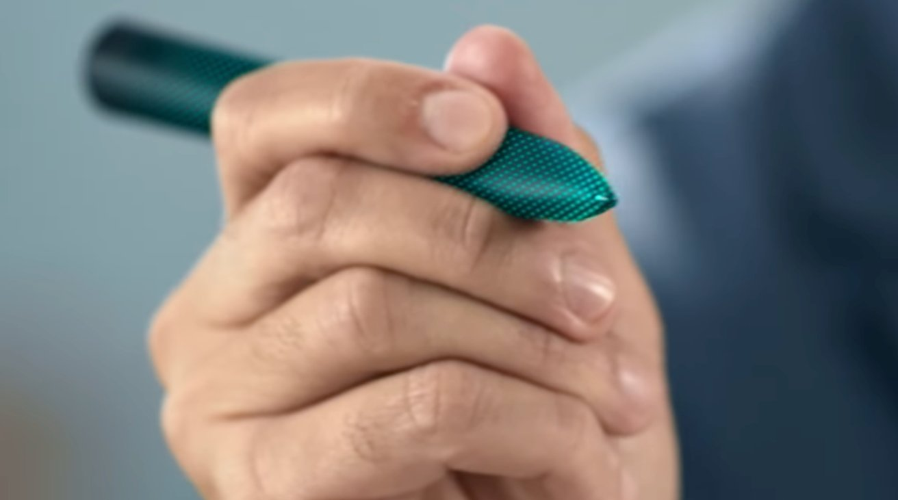
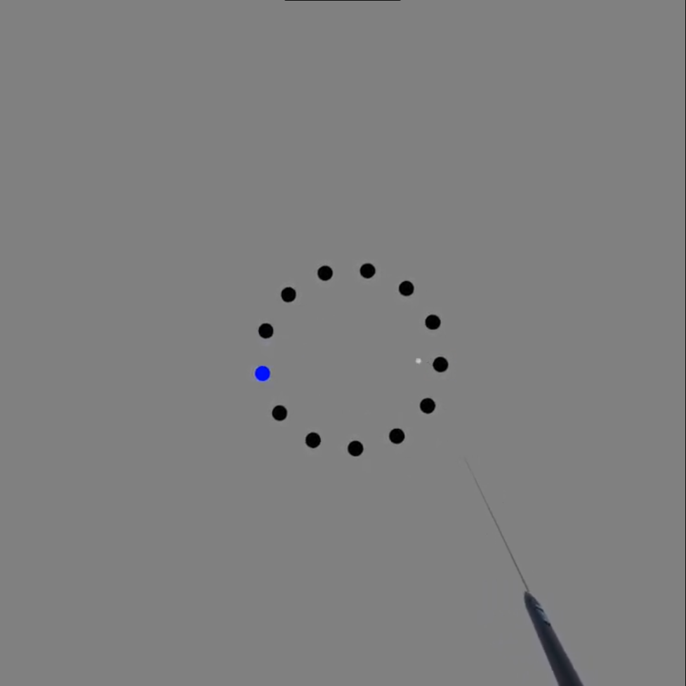
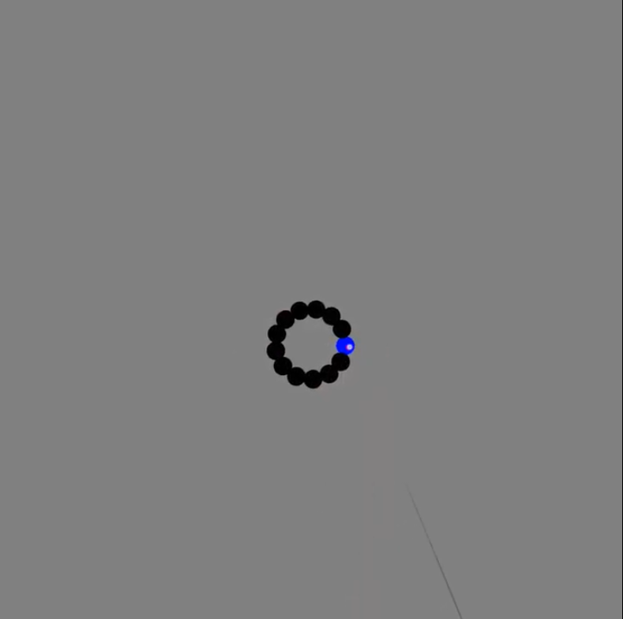
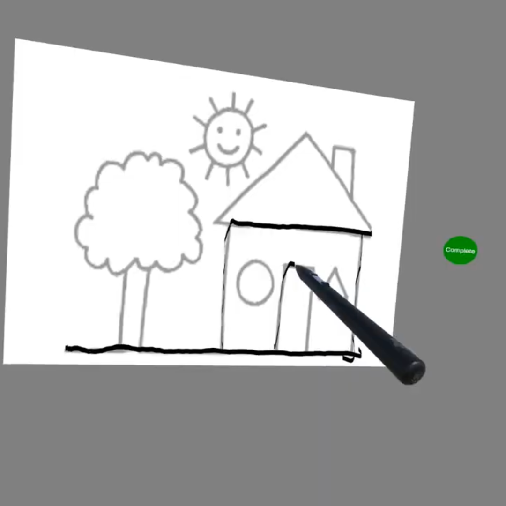

Investigating High-Precision Input for XR Styluses (MX Ink)
A two-part investigation into the accuracy of 3D stylus selection (the Heisenberg Effect) and the design of new gestures (Double-Tap).

Overview: The Problem & Solution
The Logitech MX Ink is a 6DoF stylus designed for XR. It promotes fine tuned drawing and spatial targeting more accurately. My summer internship in 2024 focused on testing these attributes and quantifying how much more accurate it is.
The Problem (A Two-Part Challenge):
- Is a stylus really more precise? A phenomena in spatial input is the Heisenberg effect of spatial interaction - the unintended displacement of the device during button presses due to the force pressing down. This effect can ruin a perfectly aimed selection. Is a stylus less affected by this than a standard controller?
- How do we add new interactions? The MX Ink supports double tapping as a secondary action, which is common for stylus input. However, what is uncommon is the ability to place the stylus in different surfaces and hold it in different grip styles in 3D space. Therefore we needed to understand how these grip styles and positioning affect the ability to perform the secondary double tap action.
The Solution: I ran a two-part research program with 25 total participants to build a complete profile of stylus interaction.
- Part 1: Quantify Precision. A comparative user study to measure the Heisenberg Effect on a stylus vs. a standard controller.
- Part 2: Double Tap. User study to determine the precise detection timings (interval and duration) for a reliable double-tap gesture.

My Role:
I was responsible for the end-to-end design and execution of two distinct user studies across 25 participants:
- Interaction Design: Defining the comparative tasks, selection mechanics, and the core metrics for the double-tap gesture.
- Software Prototyping: Building the VR experiment environments to run all three studies.
- User Research: Designing the methodology, recruiting, and running participants.
- Data Analysis: Statistically analysing performance, displacement, error rates, and gesture timings to formulate concrete, data-driven design guidelines.
- Communication: Communicated research findings to stakeholders and engineers at both Logitech and Meta
The Process: A User-Centred Evaluation
The project aimed to provide a greater understanding of the interaction merchanics of the MX Ink. I first started by understanding an existing problem (precision) and then use that knowledge to design a new interaction (double-tap).- Quantify Precision (The Heisenberg Effect): First, I ran a comparitive study to compare the Logitech MX Ink stylus against a Meta Quest Touch Plus controller. To isolate the Heisenberg Effect, users performed three tasks:
- Ballistic Task: A standard, rapid-fire pointing task where users moved quickly to select highlighted targets.
- Pure (Dwell) Task: A task where users had to hold the cursor perfectly still before clicking. This isolated the physical jolt of the button press from any movement error.
- Draw Task: A picture tracing task.



- Double Tap: Next, I ran a pilot study to gather the foundational data to build a reliable double-tap gesture. Participants performed 120 double-taps across four conditions, allowing us to measure the exact timings.
The test conditions:
- Finger: Tapping with the Index Finger vs. the Thumb.
- Location: Tapping in Mid-Air vs. Tapping on a Surface.
Outcomes And Implications For UX
This two-part study delivered clear, actionable guidelines for designing for XR stylus interactions.
- The Stylus is Quantifiably More Precise. The stylus consistently outperformed the controller. It was less affected by the Heisenberg Effect, resulting in significantly fewer selection errors and less physical displacement.
- The Most Critical Factor is the Finger, Not Just the Device.
- In the precision study, thumb-based clicks caused significantly more device movement and errors than index-finger clicks.
- In the double-tap study, the thumb and index finger produced completely different timing profiles. Thumbs had a shorter interval but longer tap duration.
- Overall Conclusion & Design Recommendations: A stylus is a superior tool for precision, but its grip design is key. To be effective, a double-tap gesture detector must use different timing models based on whether the user is tapping with their thumb or index finger. A one-size-fits-all model can fail for one of these groups and lead to a frustrating user experience.